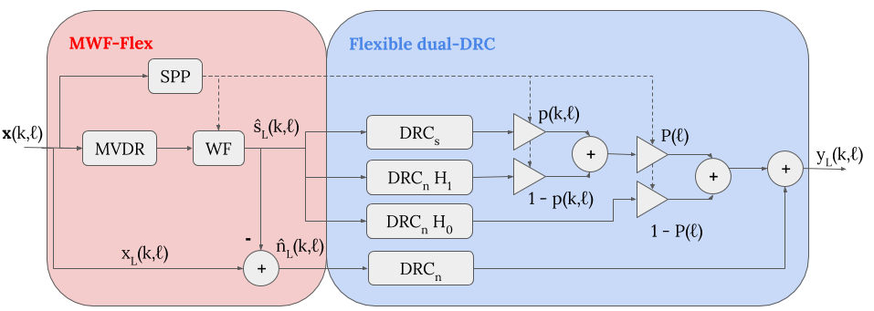

Adrien Llave Simon Leglaive Renaud Séguier
CentraleSupélec, IETR, France
2020 IEEE annual conference organized by Asia-Pacific Signal and Information Processing Association (APSIPA)
Article | Audio examples | Slides | Code | Bibtex | Acknowledgement
Abstract| Dynamic range compression (DRC) and noise reduction algorithms are commonly used in hearing aids. They are known to have opposite objectives concerning the Signal-to-Noise Ratio (SNR) and to affect negatively the localization performance. Yet, the study of their interaction received few attention. In this work, we improve an existing combined approach of DRC and noise reduction to closing the gap between the algorithms proposed independently in their respective communities. The proposed solution is then compared to state-of-the-art algorithms thanks to objective criteria assessing the spatial fidelity preservation, the SNR improvement and the output dynamic range reduction. Experimental results show that the standard serial concatenation of noise reduction and DRC stages is unable to improve the SNR and preserve the noise component acoustic characteristics. They suggest that the proposed design restores the noise localization cues and manages to improve the output SNR. |  |
You can listen to audio examples of a auditory scene composed of a speech source and a cafeteria noise at a SNR of 5 dB.
| Original speech | Original noise |
|---|---|
| Speech location @ azimuth: 0° | Speech location @ azimuth: 30° | |
|---|---|---|
| Linear | ||
| Independent DRC | ||
| Linked DRC | ||
| SNR-aware DRC (May et al. 2018) | ||
| MWF-n + DRC | ||
| Our | ||
| Ideal |
The authors acknowledges the Région Bretagne for funding the HPPA (HRTF pour les prothèses auditives) FEDER project.